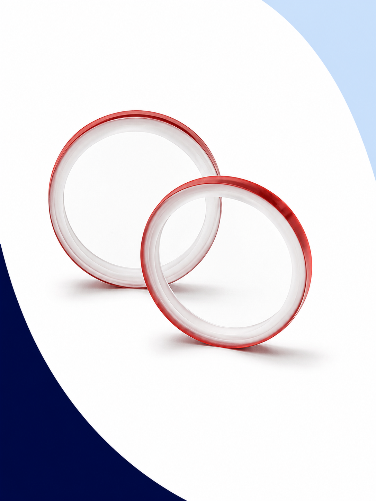
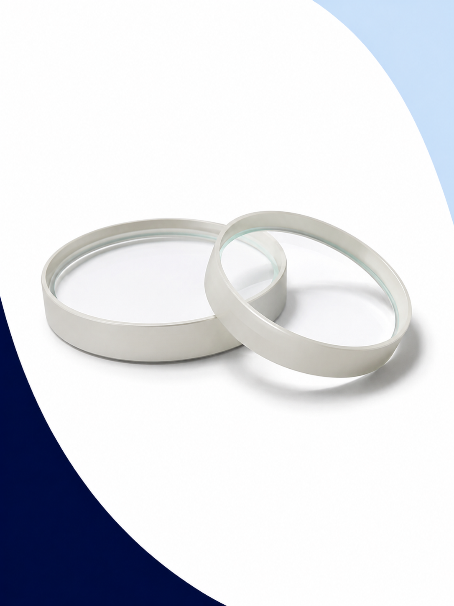

Visores de Flujo
Fabricamos Visores de Flujo Industriales para Monitoreo de Procesos
En Defany Industrial no solo comercializamos visores de flujo: los fabricamos. Nuestros equipos permiten observar directamente el comportamiento del fluido dentro de la línea sin necesidad de desmontar la tubería ni interrumpir el proceso.
El visor de flujo —también conocido como sight glass o mirilla de flujo— es un elemento de inspección visual instalado en línea que permite a los operadores verificar en tiempo real:
- Paso del fluido y continuidad del proceso
- Circulación y caudal aparente
- Presencia de líquido o mezcla líquido-gas
- Presencia de burbujas o cavitación
- Continuidad del suministro en servicios críticos


¿Qué hace un Visor de Flujo?
Un visor de flujo funciona como una mirilla o sight glass instalada en la tubería que permite observar el comportamiento del fluido sin abrir el sistema. Es el instrumento de inspección más sencillo, directo y confiable para verificar el estado operativo de un proceso.
Especificaciones del Visor Estándar GP
Nuestro visor de flujo estándar modelo GP está diseñado para la mayoría de las aplicaciones industriales. Se fabrica bajo proceso de control de calidad interno y puede adaptarse bajo solicitud.
Materiales de los Cristales
El cristal del visor de flujo es el componente que determina el rango de temperatura, la resistencia química y el nivel de exigencia térmica que puede soportar el equipo.

Cristal Fluorosilicato
Solución económica y confiable para procesos industriales de exigencia térmica moderada. Ofrece buena transparencia y compatibilidad con la mayoría de fluidos industriales no agresivos.
- Excelente transparencia óptica
- Solución de menor costo
- Procesos industriales generales
- Hasta 300°C (bajo validación del conjunto)

Cristal Borosilicato
La opción de mayor desempeño técnico para procesos con altas temperaturas, choques térmicos frecuentes o fluidos químicamente agresivos. Referencia en aplicaciones de vapor y procesos severos.
- Alta resistencia térmica
- Mayor resistencia al choque térmico
- Excelente resistencia química
- Hasta 500°C (bajo validación del conjunto)
Fluorosilicato vs Borosilicato
Use esta comparativa para seleccionar el cristal adecuado según las condiciones reales de su proceso.
| Característica | Fluorosilicato | Borosilicato |
|---|---|---|
| Costo relativo | Menor | Mayor |
| Temperatura máx. (conjunto) | Hasta 300°C (bajo validación) | Hasta 500°C (bajo validación) |
| Resistencia térmica | Media | Alta |
| Resistencia al choque térmico | Moderada | Excelente |
| Resistencia química | Buena (procesos generales) | Excelente |
| Aplicaciones típicas | Agua, aire, procesos generales | Vapor, química, alta temperatura |
| Tipo de proceso | Moderado / General | Severo / Crítico |
Aplicaciones Industriales
Nuestros visores de flujo se utilizan en una amplia variedad de industrias y fluidos. Son especialmente útiles para confirmar circulación, detectar ausencia de flujo y verificar visualmente el estado del proceso sin intervenir la línea.
Verificación visual de circulación de vapor en sistemas de distribución, calderas y trampas de vapor.
Monitoreo de flujo en sistemas de agua de proceso, enfriamiento, hidráulica y servicios auxiliares.
Inspección del retorno de condensado en sistemas de vapor para detectar problemas en trampas y líneas.
Verificación de flujo de aire en líneas de distribución neumática, instrumentos y equipos de proceso.
Monitoreo de fluidos en plantas de pasta de papel, sistemas de vapor y agua de proceso.
Inspección de líneas de vapor y agua en sistemas de secado, corrugado y proceso de cartón.
Verificación de fluidos de transmisión de calor, aceites térmicos y sistemas de calentamiento industrial.
Confirmación de cebado, detección de cavitación y verificación de flujo en succión y descarga de bombas.
Inspección visual en cualquier punto de una línea de proceso donde se requiera confirmar el flujo.
Monitoreo de fluidos químicos con cristal borosilicato en plantas de proceso y manejo de reactivos.
Refacciones Disponibles
Defany Industrial no solo fabrica el visor de flujo completo: también suministra los componentes de reemplazo que los clientes necesitan para mantener sus equipos en operación.
Muchos de nuestros clientes llegan buscando únicamente la reposición del cristal roto, el empaque deteriorado o algún componente dañado. Fabricamos y suministramos todas las refacciones del visor GP como parte integral de nuestro servicio.
Configura tu Visor de Flujo
Seleccione las características de su aplicación y genere la descripción técnica completa para su cotización.
Preguntas Frecuentes
Un visor de flujo, también conocido como sight glass o mirilla de flujo, es un componente instalado en línea en una tubería o recipiente que permite observar visualmente el comportamiento del fluido —líquido, gas o mezcla— sin necesidad de abrir el sistema ni desmontar la instalación. Es el instrumento de inspección más sencillo y directo para verificar el estado operativo del proceso.
Sirve para confirmar que el fluido está circulando correctamente, detectar ausencia de flujo, verificar el cebado de bombas, monitorear presencia de burbujas o cavitación, observar cambios de color o turbidez, y facilitar el mantenimiento preventivo. Permite a los operadores tomar decisiones en tiempo real sin intervenir la línea de proceso.
El cristal de fluorosilicato es la opción económica para procesos de menor exigencia térmica y química. El cristal de borosilicato es la opción premium: tiene mayor resistencia al choque térmico, mayor resistencia química y puede trabajar a temperaturas más altas bajo validación del conjunto. La selección depende de la temperatura, el fluido y las condiciones del proceso.
El visor de flujo estándar GP soporta hasta 200 PSI de presión manométrica de trabajo en la línea estándar publicada. Para aplicaciones que superen esta presión, consulte con nuestro equipo de ingeniería para evaluar opciones de fabricación especial.
El visor estándar GP documentado trabaja hasta 350°F (177°C). Las opciones de cristal de mayor temperatura (fluorosilicato hasta 300°C y borosilicato hasta 500°C) se ofrecen bajo validación de ingeniería del conjunto completo, incluyendo cuerpo, sellos, empaques y condiciones reales del proceso. Siempre consulte con nuestro equipo antes de especificar.
Sí. La línea estándar publicada incluye ¾", 1" y 1¼" NPT. El visor GP puede fabricarse en 1½" bajo validación de ingeniería. Para medidas mayores o conexiones especiales (bridadas, BSP, soldables), contacte a nuestro equipo técnico con los datos de su aplicación para evaluar la viabilidad de fabricación.
Sí. Defany Industrial suministra refacciones para el visor GP: cristales de reemplazo (fluorosilicato y borosilicato), mirillas, empaques de grafito y PTFE, componentes internos y refacciones bajo muestra. Si tiene un visor de otra marca o fabricante, podemos fabricar los componentes equivalentes si nos proporciona la muestra o los planos del componente.
Para cotizar con precisión necesitamos: medida nominal (¾", 1", 1¼"), tipo de fluido, temperatura de operación, presión de operación, tipo de cristal preferido (fluorosilicato o borosilicato) y cantidad de piezas. También puede usar nuestro configurador en esta página para generar la especificación automáticamente y enviarla al formulario de contacto.
¿Necesita un Visor de Flujo Industrial?
Nuestro equipo puede fabricar el visor adecuado para su proceso, así como suministrar cristales, mirillas y empaques de reemplazo. Contáctenos con los datos de su aplicación.